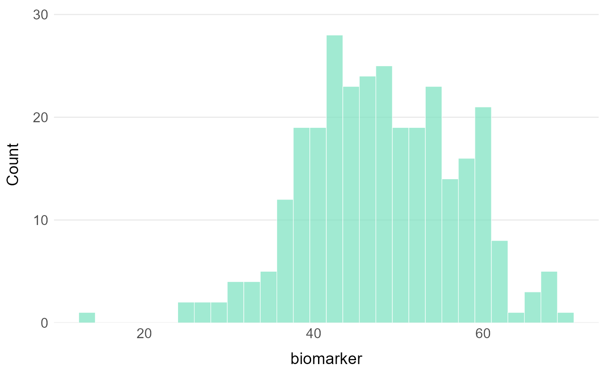
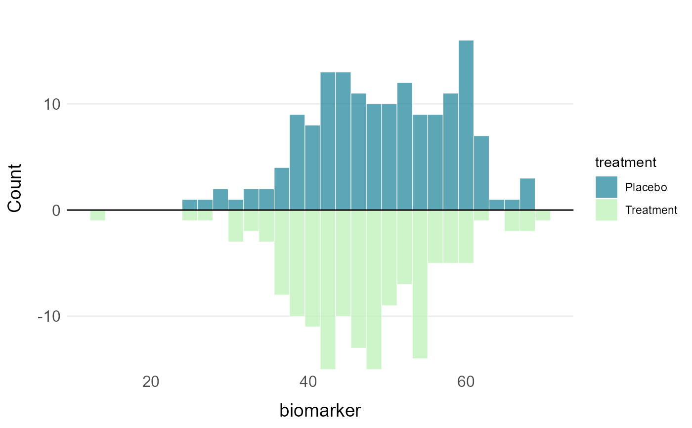
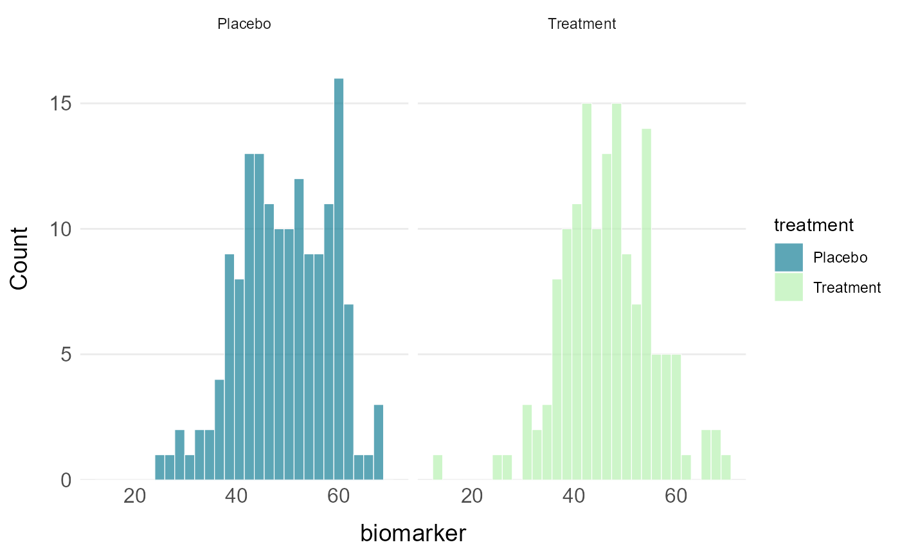

Generates publication-ready histogram plots with minimal code using ggplot2.
Usage
plot_hist(
data,
x,
group = NULL,
facet = NULL,
bins = 30,
binwidth = NULL,
alpha = 0.7,
colors = NULL,
title = NULL,
xlab = NULL,
ylab = NULL,
legend_title = NULL,
y_limits = NULL,
x_limits = NULL,
stat = NULL
)Arguments
- data
A dataframe containing the variables to plot.
- x
Character string specifying the variable for the histogram.
- group
Character string specifying the grouping variable for multiple histograms. Default: NULL.
- facet
Character string specifying the faceting variable. Default: NULL.
- bins
Numeric value indicating the number of bins for the histogram. Default: 30.
- binwidth
Numeric value indicating the width of the bins (overrides bins if specified). Default: NULL.
- alpha
Numeric value indicating the transparency level for the bars. Default: 0.7.
- colors
Character vector of colors. If NULL, uses TealGrn palette. Default: NULL.
- title
Character string for plot title. Default: NULL.
- xlab
Character string for x-axis label. Default: NULL.
- ylab
Character string for y-axis label. Default: NULL.
- legend_title
Character string for legend title. Default: NULL.
- y_limits
Numeric vector of length 2 for y-axis limits. Default: NULL.
- x_limits
Numeric vector of length 2 for x-axis limits. Default: NULL.
- stat
Character string that adds line for "mean" or "median". Default: NULL.
Examples
# Simulated clinical data
clinical_df <- clinical_data()
# Basic histogram
plot_hist(clinical_df, x = "biomarker")

# Grouped histogram
plot_hist(clinical_df, x = "biomarker", group = "treatment")

# Faceted histogram
plot_hist(clinical_df, x = "biomarker", facet = "treatment")
